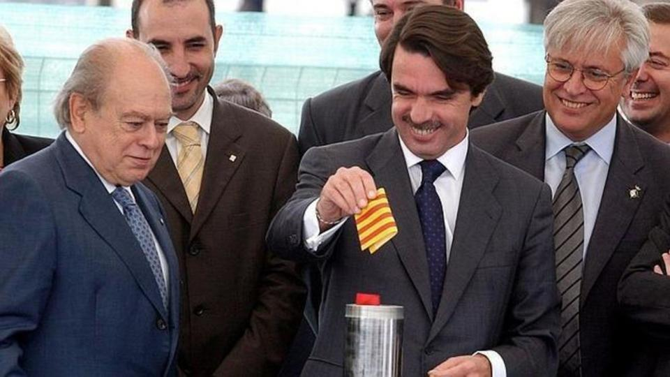
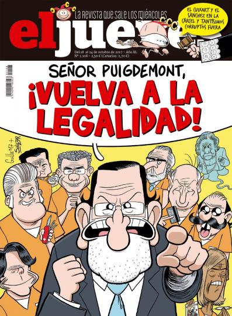

Στη φωτογραφία, πλήθος οι ισπανικές και οι «νόμιμες» καταλάνικες σημαίες (οι «παράνομες», «αποσχιστικές», φέρουν ένα αστέρι μέσα σε μπλε τρίγωνο).
Ανταπόκριση από Ισπανία
Ύστερα από το άτυπο δημοψήφισμα της 1ης Οκτωβρίου και την άγρια καταστολή του, τα καταλάνικα νερά εξακολουθούν να κατεβαίνουν χειμαρρώδη. Για την ώρα, η κεντρική κυβέρνηση προσπαθεί με σπρωξίματα να τα ξαναβάλει στο αυλάκι.
Ο μήνας εγκαινιάστηκε με ρόπαλα και από τότε η ξύλινη γλώσσα αρθρώνει δύσκαμπτoυς μονολόγους.
Την Τετάρτη 4 του μηνός, βγήκε στις οθόνες ο Φίλιππος ο ΣΤ’, βασιλιάς της Ισπανίας, για να πει τα δικά του περί του επίμαχου θέματος. Σύμφωνα με το σύνταγμα, ο βασιλιάς καλείται να παίξει διαιτητικό ρόλο ανάμεσα στους διάφορους θεσμούς του κράτους, μα αυτή τη φορά ο διαιτητής δεν προσποιήθηκε καν αμεροληψία. Ο λόγος του Φιλίππου, σε περιεχόμενο και σε ύφος, ήταν πολύ επιθετικός, ακόμα και απειλητικός για τις καταλάνικες αρχές.
Την Κυριακή 8, πραγματοποιήθηκε στη Βαρκελώνη μια ογκώδη διαδήλωση «υπέρ του συντάγματος» (ένα εκατομμύριο οι συμμετέχοντες κατά τους διοργανωτές, 350.000, κατά την τοπική αστυνομία).
Το κάλεσμα είχε την ρητή και πρακτική υποστήριξη του κυβερνώντος Λαϊκού Κόμματος (ΡΡ) και των Πολιτών («Θιουδαδάνος», το κόμμα που ηγείται ο υπερφιλελεύθερος Άλβερτ Ριβέρα), αλλά και τη συμμετοχή διάφορων μελών του Σοσιαλιστικού Κόμματος (PSOE) σε «προσωπικό επίπεδο», καθώς και την παρουσία ανάμεσα στους ομιλητές του νομπελίστα λογοτέχνη Μάριο Βάργκας Λιόσα. Οι ισπανικές σημαίες, άπειρο και αναρίθμητο πλήθος κι αυτές.
Φυσικά η διαδήλωση έκανε δικά της όλα τα πρωτοσέλιδα και πήρε τη μερίδα του λέοντος στα δελτία ειδήσεων.
Δεν έχαιραν την ίδια κάλυψη όμως ούτε οι συγκεντρώσεις που έγιναν το Σάββατο 7 σε διάφορες πόλεις της ισπανικής επικράτειας για να ζητήσουν διάλογο και στις δύο πλευρές ώστε να βρεθεί μια πολιτική και ειρηνική λύση στη διαμάχη, ούτε η πορεία που παραδοσιακά πραγματοποιεί μερίδα της βαλενθιάνικης αριστεράς κάθε 9 Οκτωβρίου για διεκδίκηση και υποστήριξη της τοπικής γλώσσας (παραλλαγή της καταλάνικης), που φέτος διακόπηκε βίαια από τους άγριους ξυλοδαρμούς ακροδεξιών ομάδων, μάλιστα υπό το ατάραχο βλέμμα των αστυνομικών μονάδων καταστολής ταραχών.
Την Τρίτη 10 αναμενόταν, με πολύ σασπένς, η παρέμβαση στο καταλάνικο κοινοβούλιο του προέδρου της Χενεραλιτάτ, Κάρλες Πουιτσδεμόντ, αφού ενδεχομένως θα προκήρυσσε την ίδρυση της Δημοκρατίας της Καταλονίας και την επακόλουθη απόσχισή της από το Βασίλειο της Ισπανίας.
Είπα ξείπα
Και πράγματι το είπε και σχεδόν ταυτόχρονα το ξείπε. Δηλαδή, ναι μεν δήλωσε την πρόθεση της κυβέρνησής του να προκηρύξει στο μέλλον την ανεξαρτησία της Καταλονίας, ανέβαλε δε επ’ αόριστο την υλοποίησή της για να διευκολύνει έτσι το διάλογο με την ισπανική κυβέρνηση.
Εξυπακούεται πως οι οπαδοί της ανεξαρτησίας απογοητεύτηκαν, η απόφαση όμως (αν προτιμάτε, η «μη απόφαση») δεν ήταν τόσο αιφνιδιαστική. Τις προηγούμενες μέρες, κάποιες έγκυρες φωνές, όπως αυτή του προκατόχου της Χενεραλιτάτ, Άρτουρ Μας, προετοίμασαν το έδαφος δηλώνοντας ότι οι καιροί δεν ήταν ακόμα ώριμοι για την ανεξαρτησία.
Φυσικά, στη διαμόρφωση τέτοιας σκέψης συνέβαλαν ουκ ολίγο οι είκοσι μεγάλες εταιρείες που ανακοίνωσαν την μετατόπιση των εδρών τους από τη Βαρκελώνη στη Μαδρίτη ή σε άλλες ισπανικές πόλεις –συμπεριλαμβανόμενες και μερικές «γνήσιες» καταλάνικες τράπεζες. Τι να γίνει; Πολλά τα κάλλη της πατρίδας, του κέρδους όμως πάμπολλα.
Την επομένη, η κυβέρνηση του Ραχόι, εν είδει τηλεσιγράφου, έδωσε προθεσμία στη Χενεραλιτάτ μέχρι τη Δευτέρα 16 για να ξεκαθαρίσει αν προκήρυξε ή όχι την ανεξαρτησία. Εάν απαντήσει αρνητικά, θα ξαναγίνουμε αγαπητοί και φίλοι και τα περασμένα ξεχασμένα. σε διαφορετική περίπτωση, η κεντρική κυβέρνηση θα ενεργοποιήσει το άρθρο 155 του συντάγματος, που της επιτρέπει, με πολύ αόριστους όρους, να πάρει όσα μέτρα θεωρήσει αναγκαία για να επαναφέρει την τάξη στη δύστροπη περιφέρεια. Βέβαια, ο καθένας καταλαβαίνει ότι η Χενεραλιτάτ δε μπορεί τώρα να πει «συγνώμη, λάθος» και να τα πάρει όλα πίσω, εκτός αν διαλέξει εθελοντικά το δρόμο της πολιτικής αυτοχειρίας.
Να λοιπόν που ξημέρωσε 16 και η Μονκλόα (έδρα της κεντρικής κυβέρνησης) έλαβε τη γραπτή απάντηση του Πουιτσδεμόντ. Ο πρόεδρος της Χενεραλιτάτ δεν ξεκαθαρίζει αν έγινε ή όχι προκήρυξη ανεξαρτησίας και ζητάει από τον Ραχόι να ξεκινήσει μία δίμηνη περίοδος για άμεση διάλογο των δύο πλευρών.
Απ’ τη μεριά της, η κεντρική κυβέρνηση δεν άργησε να δώσει απόκριση: θεωρεί ότι η Χενεραλιτάτ δε απαντάει επί της ουσίας και δίνει νέα προθεσμία, μέχρι την Πέμπτη 19 αυτή τη φορά, και από εκεί και πέρα, αν δε λάβει ένα σαφές "όχι" θα ενεργοποιήσει το περίφημο άρθρο 155.
Ποιες θα είναι οι εξελίξεις; Φυσικά το αγνοούμε. Στην ηπιότερη εκδοχή, πιθανόν θα διαλυθεί το καταλάνικο κοινοβούλιο και θα γίνουν νέες τοπικές εκλογές. Τώρα, αν αυτό θα σημαίνει το τέλος του προβλήματος ή απλά τη διαιώνισή του, άλλο ζήτημα και τούτο.
Εμείς που τόσο αγαπηθήκαμε, τώρα γίναμε ξένοι
Τα πρώτα ρήγματα στις σχέσεις PP-Κονβερχένθια ι Ουνιό («Σύγκλιση και Ένωση» [CiU], το κόμμα της καταλάνικης συντήρησης) ανάγονται στο έτος 2000, όποτε το ΡΡ του Αθνάρ σάρωσε στις εκλογές και σχημάτισε αυτοδύναμη κυβέρνηση.
Στην προηγούμενη τετραετία η υποστήριξη των βουλευτών της CiU ήταν απαραίτητη για το ΡΡ και όλα ήταν μέλι γάλα μεταξύ τους, κι ας ήταν γάμος βασισμένος στο συμφέρον. Από τότε όμως, δε σε είδα, δε σε ξέρω.

Ο Αθνάρ την εποχή των χαμόγελων, όταν η υποστήριξη του κόμματος του Ζόρδι Πουζόλ (αριστερά στη φωτογραφία) του ήταν απαραίτητη για να κρατηθεί στην κυβέρνηση.
Η τύχη της CiU χειροτέρεψε κι άλλο το 2003, όταν για πρώτη φορά –με επικεφαλής τον Άρτουρ Μας, διάδοχο του ιστορικού της ηγέτη Ζόρδι Πουζόλ– έχασε στις καταλάνικες εκλογές και έπρεπε να παραδώσει τη Χενεραλιτάτ σ’ έναν συνασπισμό τριών κομμάτων του ευρέως αριστερού χώρου.
Μόλις τέσσερις μήνες αργότερα, το Μάρτιο του 2004, το PSOE κέρδισε τις εθνικές βουλευτικές εκλογές και ο νεοεκλεγείς πρόεδρος της χώρας, Ροδρίγκεθ Θαπατέρο, άφησε τα χέρια ελεύθερα στο κοινοβούλιο της Καταλονίας για να συντάξει ένα καινούργιο Καταστατικό –ο Νόμος-Πλαίσιο που διέπει τις σχέσεις κάθε αυτόνομης περιοχής της Ισπανίας με το σύνολο του κράτους. Τα καίρια σημεία του νέου καταστατικού αφορούσαν, ως συνήθως, οικονομικά θέματα: ποιος θα είχε το δικαίωμα επιβολής και διαχείρισης των φόρων και με πόσα χρήματα θα συνέβαλε η Καταλονία στα κρατικά ταμεία –αντί για ένα πάγιο ποσό, προτάθηκε ένα ποσοστό από τα πραγματικά έσοδα, δηλαδή ένα μεταβλητό ποσό ανάλογο με την πορεία της οικονομίας.
Τον Σεπτέμβριο του 2005, το καταλάνικο κοινοβούλιο ενέκρινε το νέο Καταστατικό. καταψηφίστηκε μόνο από τους βουλευτές του ΡΡ (15 σε σύνολο 135). Ωστόσο, το Μάρτιο του 2006 το εθνικό κοινοβούλιο εισήγαγε διάφορες τροποποιήσεις στο Καταστατικό που μείωσαν την αυτονομία των τοπικών αρχών της Καταλονίας.
Για το ΡΡ όμως οι αλλαγές ήταν ανεπαρκείς και κατάθεσε έφεση στο Συνταγματικό Δικαστήριο (TC) ζητώντας την ακύρωση του Καταστατικού. Ύστερα από τέσσερα χρόνια, τον Ιούνιο του 2010, το TC δικαίωσε εν μέρει το ΡΡ και προχώρησε σε νέες τροποποιήσεις του Καταστατικού. Στις 10 Ιουλίου έλαβε χώρα στη Βαρκελώνη μια μεγάλη διαδήλωση διαμαρτυρίας υπό το σύνθημα «Είμαστε ένα έθνος. Εμείς αποφασίζουμε». Στο μεταξύ, το Μάιο του 2010, η κυβέρνηση του Θαπατέρο ανακοίνωσε στη βουλή μια ριζοσπαστική αλλαγή στην οικονομική πολιτική της χώρας για να συγκλίνει με τις απαιτήσεις των «ευρωπαίων εταίρων και των αγορών» και το ψαλίδι των περικοπών άρχισε το έργο του.
Το κλίμα γενικευμένης δυσφορίας έφερε σε κρίση την τρικομματική κυβέρνηση και, το Νοέμβριο, οι τοπικές εκλογές επανέφεραν θριαμβευτικά τη CiU και έδωσαν στον Άρτουρ Μας την προεδρία της Χενεραλιτάτ. Η Εσκέρρα Ρεπουβλικάνα της Καταλονίας (ERC) ζήτησε να γίνει δημοψήφισμα με το ερώτημα αν θα έπρεπε η Καταλονία να ανεξαρτοποιηθεί από την Ισπανία, αλλά η CiU απόρριψε την ιδέα και δήλωσε ότι η προτεραιότητα της κυβέρνησής της ήταν να διαπραγματευτεί ένα νέο φορολογικό σύμφωνο με το κράτος, με βάση παρόμοια σύμβαση που υπήρχε κιόλας με την Εουσκάδι (ή Χώρα των Βάσκων).
Με ελικόπτερο...
Κατά τα άλλα, η κυβέρνηση της CiU μπήκε αμέσως στο πνεύμα της νέας εποχής και έκανε σημαντικές περικοπές στους μισθούς των δημόσιων υπαλλήλων καθώς και στους προϋπολογισμούς για την παιδεία και την υγεία. Το Μάιο του 2011, τόσο στη Μαδρίτη όσο και στη Βαρκελώνη το νεοεμφανιζόμενο κίνημα των «αγανακτισμένων» έκανε πολυήμερες καταλήψεις των πιο εμβληματικών πλατειών και των δύο πόλεων. Στις 27 Μαϊου, η Mossos, δηλαδή η καταλάνικη αστυνομία, προχώρησε στην εκκένωση της Πλατείας Καταλονίας μ’ ενθουσιασμό αντάξιο των εικόνων που είδαμε πρόσφατα, στις αρχές του μήνα. Η επιχείρηση κορυφώθηκε με επιτυχία και 121 τραυματίες. Στις 15 Ιουνίου, το καταλάνικο κοινοβούλιο περικυκλώθηκε από διαδηλωτές και η πρόσβαση στο κτίριο τόσο του προέδρου Μας όσο και άλλων βουλευτών έγινε δυνατή μόνο με ελικόπτερο.
Τον Ιούλιο του 2012, το καταλάνικο κοινοβούλιο –ομόφωνα πλην ΡΡ, που δήλωσε αποχή– έδωσε πράσινο φως στο προσχέδιο του νέου φορολογικού σύμφωνο με το κράτος. Το Σεπτέμβριο ο Μας συναντήθηκε στη Μαδρίτη με τον Μαριάνο Ραχόι (που πήρε απόλυτη πλειοψηφία τις εκλογές του προηγούμενου Νοεμβρίου), αλλά η απάντησή του ήταν πως δεν υπάρχουν περιθώρια για καμιά διαπραγμάτευση. Μία εβδομάδα αργότερα το καταλάνικο κοινοβούλιο ενέκρινε μια πρόταση για να γίνει δημοψήφισμα αυτοδιάθεσης. Αυτή τη φορά, ψήφισε κατά το ΡΡ, αλλά και το Σοσιαλιστικό Κόμμα και η αναδυόμενη δύναμη των Θιουδαδάνος. Το Νοέμβριο έγιναν πρόωρες εκλογές. Η CiU έχασε το 20% των εδρών που κατείχε και αναγκάστηκε να συμμαχήσει με τον παραδοσιακό της αντίπαλο στο χώρο του καταλάνικου εθνικισμού, την ERC.
Από τότε, υπό την πίεση της ERC και εφαρμόζοντας την παλιά συνταγή πως όλα τα δεινά μας οφείλονται σε εκείνους που μας υπονομεύουν πέρα από τα σύνορα, η CiU έκλινε σαφέστερα προς τη διεκδίκηση της ανεξαρτησίας και οι προστριβές με το κράτος μεγάλωσαν σε συχνότητα και ένταση.
Κι όμως, η εσωτερική πολιτική της Καταλονίας βρίσκεται και αυτή σε συνεχόμενη κίνηση και μεταβολή. Νέες πρόωρες εκλογές το Νοέμβριο του 2015 –που είχαν ως έμμονο θέμα καμπάνιας την προώθηση ή την απόρριψη του δημοψηφίσματος– συρρίκνωσαν κι άλλο τα ποσοστά της CiU, το Θιουδαδάνος εκτόπισε το ΡΡ ως πρώτη δύναμη της «ισπανόφιλης» δεξιάς και η CUP («Υποψηφιότητα Λαϊκής Ενότητας»), ένας συνασπισμός από πρώην εξωκοινοβουλευτικών αριστερών παρατάξεων, κατάφερε να πάρει 10 έδρες που αποδείχτηκαν κλειδί για το σχηματισμό κυβέρνησης. Εκ των πραγμάτων, αυτές οι περιζήτητες καρέκλες κόστισαν στον Μας τον προεδρικό θώκο, αφού η CUP έθεσε ως αδιαπραγμάτευτο όρο για να υποστηρίξει μια κυβέρνηση CiU-ERC το πολιτικό του κεφάλι, μια που δεν ήταν διατεθειμένη να ξεχάσει τον ρόλο που έπαιξε ως υπέρμαχος των κοινωνικών περικοπών. Έτσι λοιπόν, τον Ιανουάριο του 2016 ο Άρτουρ Μας αναγκάστηκε να παραδώσει τη σκυτάλη στον σύντροφό του Κάρλες Πουιτσδεμόντ.
Πίσω από τις σημαίες ή το ξέπλυμα των απλύτων
Και ξαφνικά, καθώς η αντιπαράθεση με την κεντρική κυβέρνηση οξυνόταν, «ανακαλύφθηκε» η διαφθορά που κυριαρχούσε μέσα στις γραμμές της CiU.
Από το 2014 διάφορα δημοσιεύματα έβαλαν στο στόχο τους την αδιάφανη προέλευση μέρος της περιουσίας του Ζόρδι Πουζόλ, ιδρυτής της Κονβερχένθιας και επί 23 συναπτά χρόνια προέδρου της Χενεραλιτάτ. Και ο ίδιος ο «εντιμότατος», όπως τον προσφωνούσαν ως πρόεδρο, αναγνώρισε ότι είχε «κάποια χρήματα στο εξωτερικό» που δεν βρήκε ποτέ την κατάλληλη στιγμή να τα δηλώσει στην Εφορία. Η υπόθεση δεν έχει εκδικασθεί ακόμα, μα φαίνεται ότι η οικογένεια Πουζόλ θα είχε το λιγότερο τέσσερα γκρίζα εκατομμύρια ευρώ μεταξύ Ελβετίας και Ανδόρας, χώρες που δεν καίγονται υπερβολικά για το πόθεν έσχες.
Τον Οκτώβριο του 2015, όλως τυχαίως ένα μήνα πριν από τις, προς το παρόν, τελευταίες καταλάνικες εκλογές, η Πολιτοφυλακή μπήκε για έρευνα στα κεντρικά της γραφεία, έκανε κατάσχεση εγγράφων και συνέλαβε τον ταμία του κόμματος. Από εκεί και πέρα, βγήκαν σωρηδόν στο φως στοιχεία για την ύπαρξη μιας οργανωμένης πλεκτάνης δωροδοκίας προς όφελος της παράταξης αλλά και μερικών στελεχών της. Όλα δείχνουν ότι, επί δεκαετίες οι κυβερνήσεις της CiU ανάθεσαν δημόσια έργα σε διάφορους εργολάβους υπό την προϋπόθεση να γίνει «δωρεά» στο κόμμα του 3% των συνολικών δαπανών. Το κόλπο είχε κι άλλα παρακλάδια και παραλλαγές, αυτό όμως ήταν το βασικό σχήμα λειτουργίας.
Ωστόσο, ένας πρώην πολιτικός, που σήμερα ζει ως ιδιώτης, πάσχων από σοβαρή αρρώστεια, αποδείχτηκε αρκετά πιο τετραπέρατος από δικαστές, αστυνομικούς και δημοσιογράφους. Στις 24 Φεβρουαρίου του 2005, σε μια ολομέλεια του κοινοβουλίου της Καταλονίας, ο αρχηγός της αξιωματικής αντιπολίτευσης, Άρτουρ Μας, έκανε σφοδρή επίθεση στον επικεφαλής της τότε τρικομματικής κυβέρνησης, Πασκουάλ Μαραγάλ (εκείνος που ήταν δήμαρχος της Βαρκελώνης όταν η Πατουλίδου εκσυγχρόνισε το «νενικήκαμεν» του Φειδιππίδου). Ο Μαράγαλ, μέσα στη θέρμη της αντιπαράθεσης, εκστόμισε την περίφημη ατάκα απευθυνόμενος στον Μας: «Εσείς έχετε ένα πρόβλημα, ένα πρόβλημα που λέγεται 3 τοις εκατό». Ράγισαν τα καζάνια της κόλασης και ο Μας, όλο πυρ και μανία, απείλησε να αποσύρει την υποστήριξη της CiU στο νέο Καταστατικό της Καταλονίας, που τότε βρισκόταν υπό σύνταξης.
Ο Μαράγαλ κατάλαβε ότι ο θυμός του είχε βάλει τρικλοποδιά και απέσυρε αμέσως τα λόγια του. Ούτως ή άλλως, για να κρατηθεί το τυπικό δημιουργήθηκε μια ερευνητική επιτροπή που, ύστερα από τρεις μήνες εντατικής εργασίας, αποφάνθηκε ότι δεν υπήρχαν ούτε ενδείξεις για κάτι τέτοιο. Εν περιλήψει, δέκα χρόνια πριν το σκάνδαλο του «λαδώματος» φτάσει στα πρωτοσέλιδα, ο Μαραγάλ ήξερε τι γινότανε. Όλοι οι άλλοι όμως δεν είχαν την παραμικρή υποψία.
Λίγο οι αλλαγές προσανατολισμού στην άστατη καταλάνικη πολιτική, λίγο η βρώμα που άρχιζε να ξεπροβάλλει κάτω από τον τάπητα, η Κονβερχένθια βρήκε σκόπιμο να μετονομαστεί και από τα μέσα του 2016 ξαναβάφτισε τον εαυτό του ως PDeCAT (Δημοκρατικό Ευρωπαϊκό Κόμμα της Καταλονίας).

Εξώφυλλο από το σατιρικό περιοδικό el jueves (η Πέμπτη) που κυκλοφορεί αυτή την εβδομάδα. Με απειλητικό ύφος ο Ραχόι λέει: «Κύριε Πουιτσδεμόντ, επιστρέψτε στη νομιμότητα!», ενώ πίσω του εμφανίζονται διάφορα στελέχη και παράγοντες του κόμματός του, καταδικασμένα ή υπόδικα – ακόμα και το φάντασμα της πρώην δημάρχου της Βαλένθια, που πέθανε πέρσι.
Μα υπάρχει ακόμα κάποιος στην Ισπανία που να σκανδαλίζεται για το τσέπωμα μερικών ψωροεκατομμυρίων δημοσίου χρήματος; Πώς τα πάμε από την άλλη μεριά; Το κυβερνών κόμμα, και το στρατόπεδό του, που τόσο κόπτεται για την παραβίαση της νομιμότητας και του συντάγματος εκ μέρους των αποσχιστών, είναι μπλεγμένο σε πολυάριθμες υποθέσεις οικονομικής διαφθοράς. Το ίδιο το ΡΡ, ως νομικό πρόσωπο, δηλαδή ως κόμμα και όχι πια τα στελέχη του ως άτομα, κατηγορείται –από τα δικαστήρια πλέον– για εκούσια καταστροφή αποδεικτικών στοιχείων, ξέπλυμα μαύρου χρήματος και παράνομη χρηματοδότηση. Μικρά αμαρτήματα βέβαια αν η χώρα πάει καλά. Και καλά πάει: στα τέλη Ιουνίου, η Τράπεζα της Ισπανίας (μία πηγή καθόλου ύποπτη για υπονομευτικές τάσεις) ανακοίνωσε, ελαφρά τη καρδία, πως από τα 77 δισεκατομμύρια ευρώ δημοσίου χρήματος που «δανείστηκαν» στο ιδιωτικό τραπεζικό σύστημα για να καλύψουν τα κενά που η λαθεμένη σπέκουλα άφησε στους λογαριασμούς του, έχουν επιστραφεί τα 4. αν είμαστε πολύ τυχεροί, ίσως να επιστραφούν κι άλλα 12. για τα υπόλοιπα ούτε κουβέντα να γίνεται, δε θα τα δούμε ποτέ πια.
Αυτές τις μέρες, μια τεράστια ισπανική σημαία κάλυπτε τρεις ολόκληρους ορόφους στα κεντρικά γραφεία του ΡΡ στη Μαδρίτη. Η «εστελάδα», η «παράνομη» σημαία των οπαδών της ανεξαρτησίας, είναι πανταχού παρούσα στην Καταλονία. Οι σημαίες πλαταγίζουν με τα χτυπητά τους χρώματα και ο ερπετικός εγκέφαλος μας οδηγεί. Προς τα πού όμως;